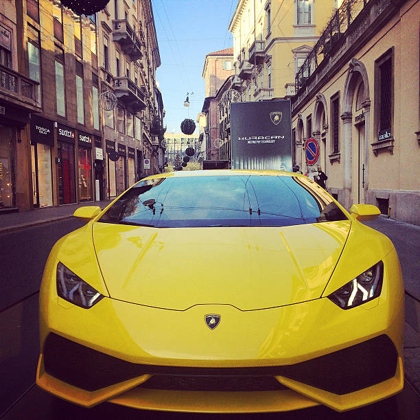

13/02/2022
Automobili Lamborghini S.p.A. thường được gọi là Lambor hay ở Việt Nam còn được gọi là “Siêu Bò”. Lamborghini là hãng xe thể thao cao cấp của Italia có trụ sở chính và xưởng sản xuất xe đặt tại Sant’ Agata Bolognese, gần Bologna, Italy. Hiện tại Lambor là công ty con thuộc tập đoàn ô tô Volkswagen AG cùng quê hương với Mercedes-Benz.
13/02/2022
Lamborghini Aventador SVJ hiện là siêu xe mạnh mẽ. Được giới thiệu lần đầu vào tháng 08/2018, SVJ chỉ sản xuất giới hạn 963 chiếc.
13/02/2022
Phiên bản mới của Aventador lấy tên thêm chữ S ở đằng sau ra mắt vào tháng 3/2017.
13/02/2022
Lamborghini Aventador LP700-4 trang bị động cơ V12 dung tích 6,5L, công suất tối đa 691Hp/8250rpm, mô men xoắn tối đa 690NM/5500rpm.
13/02/2022
Một siêu phẩm nữa là Aventador LP750-SV. Được sản xuất giới hạn 600 chiếc trong thời gian từ 2015-2017, và 2 trong số đó đã về Việt Nam.
13/02/2022
Lamborghini Huracan được sản xuất để thay thế cho dòng xe Gallardo trước đây và nhanh chóng được đón nhận. Hồi tháng 6/2017, đã có đến 8.000 chiếc Huracan được sản xuất ra sau 3 năm ra mắt.